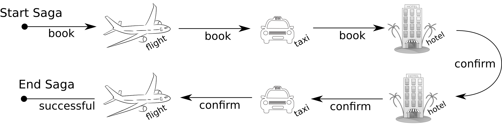
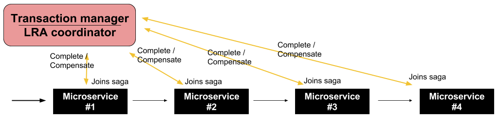

Ondra Chaloupka / ochaloup@redhat.com
Transactional model for long living transaction
Saga paper (H. Garcia-Molina, K. Salem; 1987)
Relaxing ACID properties
Eventual consistent
One logical unit of work, everything or nothing happens
ACID properties is a transaction guarantees
Protecting shared resources from multiple users
closely coupled environment
short duration
Saga
loosely coupled
long duration

consists of a sequence of autonomous operations, each immediatelly visible to outer world
responsibility of failures handling to developer (handlers)
transaction manager is responsible for calling handlers
compensation handler defined by developer, called by transaction manager
LRA: Long Running Actions
Saga implementation for REST calls
based on the MicroProfile stack (JAX-RS, CDI)

Narayana LRA - implementation of Saga for REST calls
better fit for MSA than ACID transactions
a tool that can help in desiging the application
MSA principles should be preserved